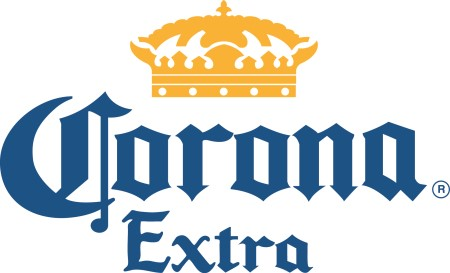

홈 > 브랜드 매거진 > 코로나 엑스트라
코로나 엑스트라
코로나 엑스트라(Corona Extra)는 멕시코 그루포 모델로가 양조하는 페일 라거 맥주이다.
산업 분야 식음료 · 공개 등급 자료 기반 · 브랜드 평가 4.3 ★

한눈에 보는 브랜드
코로나 엑스트라는 1925년 멕시코시티에서 출범한 그루포 모델로가 같은 해 선보인 멕시칸 라거다. 속이 비치는 투명 유리병 목에 라임 조각을 끼워 마시는 방식으로 널리 알려졌으며, 황금빛 페일 라거 특유의 가볍고 청량한 목넘김을 지닌다.
현재 180개국 이상으로 나가는 세계 최대 수출 규모의 멕시코 맥주이자, 1998년 이후 미국 수입맥주 판매 상위권을 지켜 온 대표 브랜드다. 2025년 브랜드 출범 100주년을 맞았으며, 멕시코를 넘어 글로벌 라이프스타일 음료로 자리 잡았다.
브랜드 관점
가장 먼저 볼 지점은 경쟁 구도다. 미국 수입맥주 시장은 네덜란드의 하이네켄과 멕시코의 모델로 에스페시알, 그리고 코로나가 삼각 경쟁을 벌이며, 모델로 에스페시알은 2023년 6월 미국 전체 판매 1위에 올라 멕시코 라거의 강세를 입증했다.
코로나의 차별점은 맛보다 분위기에 있다. 라임을 끼운 투명병과 해변 휴식이라는 이미지를 결합해 '쉬어 가는 시간'을 파는 전략으로, 하이네켄의 프리미엄 정공법, 모델로의 노동자 친화 정서와 뚜렷이 갈린다.
소유권 분리도 핵심 변수다. 미국 내 권리는 컨스털레이션 브랜즈가, 그 외 지역은 AB인베브가 갖는 이원 구조여서 시장별 전략이 따로 움직인다.
2020년 감염병 명칭이 브랜드명과 겹치며 한때 인지 혼선이 빚어졌으나 매출 타격은 제한적이었다. 한국에서는 AB인베브 계열 OB맥주가 수입을 맡아 대형마트·편의점 병맥주 중심으로 유통된다.
시작과 성장
출발점은 1925년 10월 멕시코시티다. 브라울리오 이리아르테와 마르틴 오얌부루를 비롯한 스페인계 이민자들이 제빵업에서 양조로 사업을 전환해 그루포 모델로를 세웠고, 독일계 브루마스터 아돌프 슈메트제가 빚어낸 코로나가 그해 시장에 나왔다.
다른 맥주가 갈색 병을 쓰던 시기에 속이 보이는 투명병으로 차별화해 신선함을 시각적으로 드러낸 점이 초기 성공의 발판이었다. 1935년 멕시코 최다 판매 맥주 반열에 올랐고, 1976년 미국 수출이 허용되면서 성장에 가속이 붙어 1988년 미국 수입맥주 1위에 올랐다.
분수령은 2013년 6월이다. AB인베브가 그루포 모델로를 약 201억 달러에 인수하는 과정에서 독점 규제를 풀기 위해 미국 사업권을 약 47억 5천만 달러에 컨스털레이션 브랜즈로 매각했다.
여기에는 미국 내 브랜드 사용권과 멕시코 피에드라스 네그라스 양조장, 유통사 크라운 임포츠가 포함돼 미국과 그 외 지역의 소유가 영구히 갈렸다.
브랜드 아이덴티티
코로나가 내세우는 가치는 멈춤과 여유다. 브랜드명 코로나는 스페인어로 왕관을 뜻하며, 1935년 에두아르도 카타뇨가 푸에르토바야르타 과달루페 대성당 첨탑의 왕관에서 따 만든 황금 왕관 로고가 정체성의 중심에 있다.
1980년대부터 더해진 라임 조각, 파랑과 금색 배색은 신뢰와 가벼운 사치라는 인상을 함께 전한다. '해변을 찾아라'로 대표되는 캠페인처럼, 코로나는 일상에서 벗어난 휴식과 햇살, 바다를 핵심 이미지로 삼는다.
타깃은 격식보다 분위기를 즐기는 폭넓은 성인 소비층이며, 보이스는 느긋하고 군더더기 없는 절제된 어조를 유지한다.
제품과 서비스
중심 제품은 황금빛 라거인 코로나 엑스트라이며, 칼로리를 낮춘 코로나 라이트, 무알코올 라인인 코로나 세로, 오렌지·라임 껍질을 넣어 2025년 5월 출시한 코로나 선브루 등으로 구성이 넓어졌다. 국내에서는 355밀리리터 병과 330밀리리터 캔이 주로 유통되며, 한 병 가격은 대체로 수입 프리미엄 라거 구간에 형성된다.
대형마트, 편의점, 음식점과 바를 두루 거치는 다채널 방식으로 판매된다.
현재 상태
소유 구조는 지역에 따라 둘로 나뉜다. 미국 시장은 컨스털레이션 브랜즈가 수입·판매 권리를 보유하고, 미국을 제외한 전 세계는 AB인베브가 브랜드와 양조를 맡는다.
본사 기능과 주요 생산은 멕시코에 기반을 두며, 브랜드 단위의 별도 매출·임직원 규모 등 세부 수치는 공식적으로 공개되지 않았다.
타임라인
BI/CI 변천사
함께 읽을 브랜드
 식음료 · 자료 기반하이네켄
식음료 · 자료 기반하이네켄하이네켄(Heineken)은 1864년 네덜란드 암스테르담에서 창립된 하이네켄 N.V.의 플래그십 페일 라거 맥주 브랜드이다.
 식음료 · 매거진 완성코카-콜라
식음료 · 매거진 완성코카-콜라코카-콜라는 음료의 맛보다 함께 마시는 순간의 감정을 브랜드 자산으로 축적해 왔다. 병의 형태, 색, 광고 언어, 공유의 장면이 반복되면서 제품은 탄산음료를 넘어 친...
맥도날드는 가장 평범한 소비재를 세계 어디서나 읽히는 대중문화의 기호로 바꾼 브랜드다. 햄버거와 감자튀김은 단순한 메뉴지만, 맥도날드는 속도, 표준화, 접근성, 익숙...
 식음료 · 편집 검수Ribena
식음료 · 편집 검수Ribena리베나는 블랙커런트(Ribes nigrum)를 원료로 한 영국의 대표적 과일 농축 음료 브랜드다. 이름 자체가 블랙커런트의 학명에서 유래했으며, 진한 보라빛 베리와...
BI
비비고
식음료 · 자료 기반비비고비비고(bibigo)는 CJ제일제당이 2010년 출시한 글로벌 한식 브랜드로, 만두·김치·즉석밥·한식 소스 등 100여 종의 한국 식품을 약 70개국에서 판매한다.
 식음료 · 자료 기반공차
식음료 · 자료 기반공차공차(Gong Cha)는 대만에서 시작된 버블티 브랜드의 한국 사업을 운영하는 공차코리아의 브랜드다.
 식음료 · 매거진 완성앱솔루트
식음료 · 매거진 완성앱솔루트앱솔루트는 보드카 병 하나를 광고와 예술의 반복 가능한 캔버스로 만든 브랜드다. 제품 형태의 일관성을 유지하면서도 캠페인마다 다른 문화적 해석을 입혀, 단순한 병을...
네슬레(Nestlé)는 스위스 브베에 본사를 둔 세계 최대 규모의 식음료 다국적 기업이다.